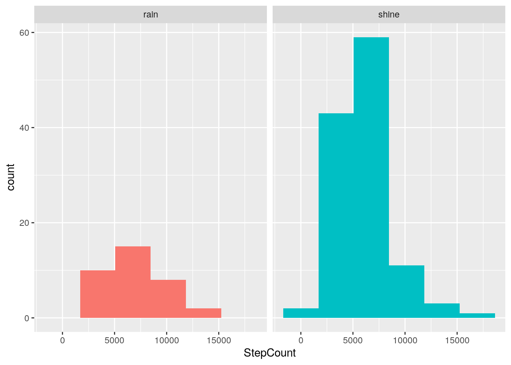
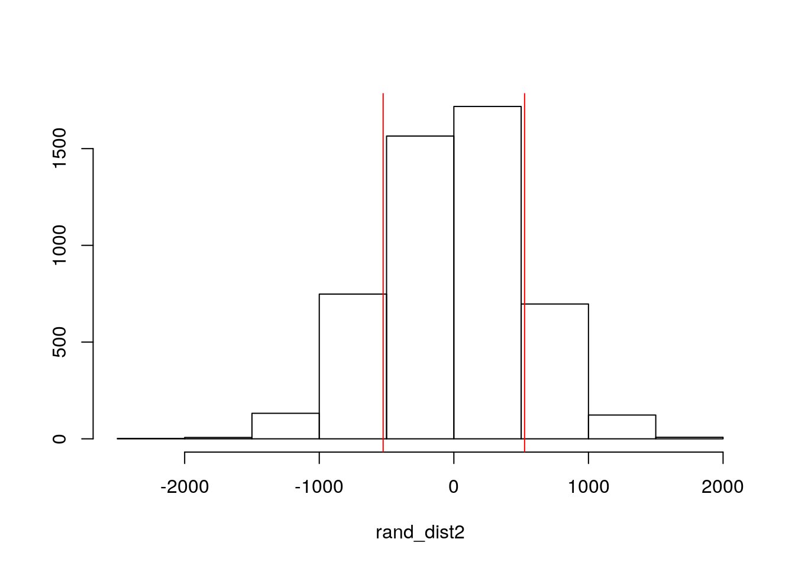
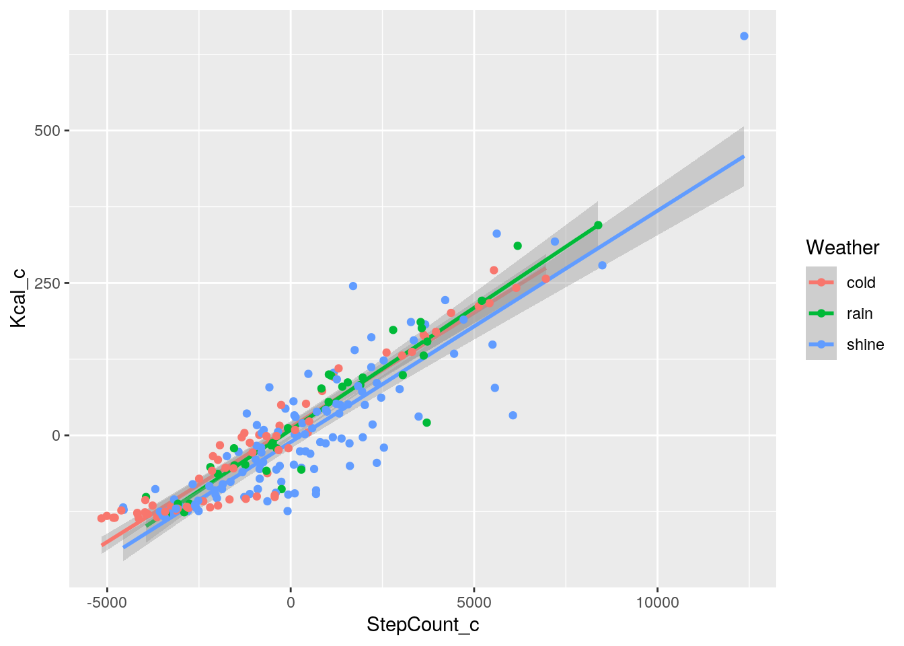
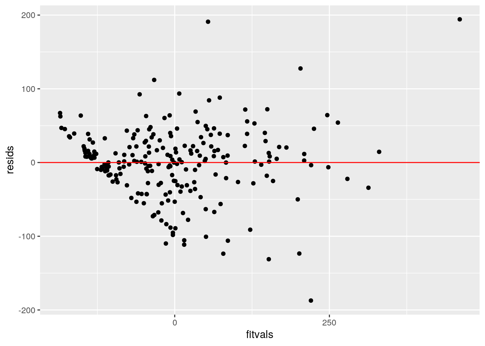
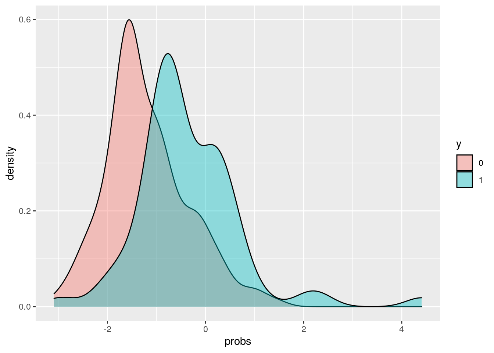
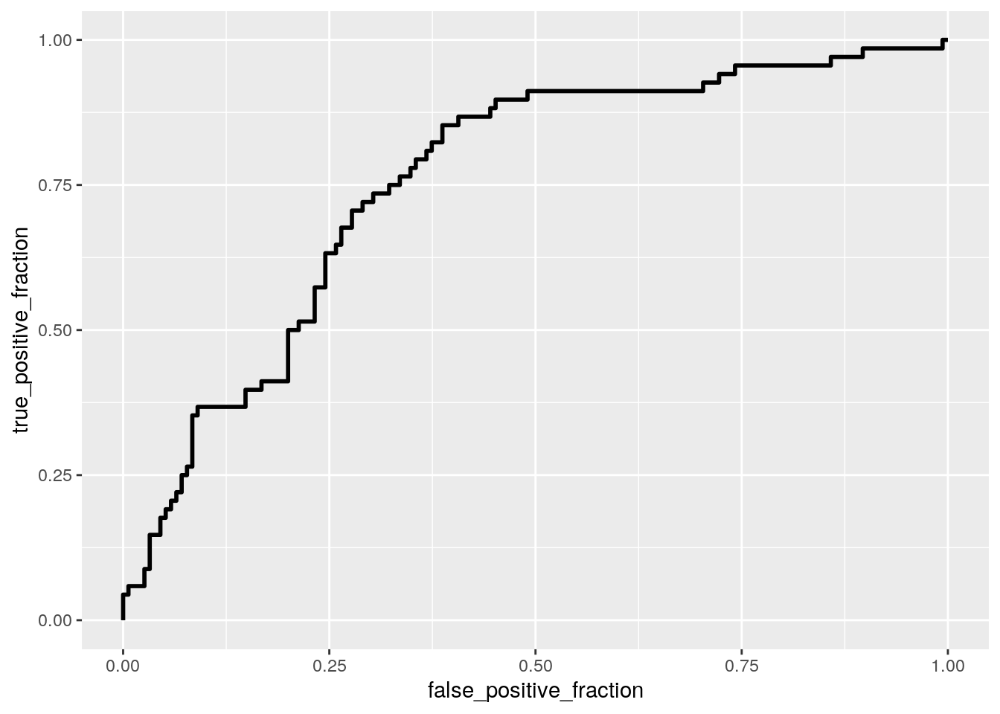

The dataset I decided to work with for this project is called, “Did the Author Walk the Dogs Today?”. This file contains daily pedometer data for an unknown author with 7 variables and 223 observations. There are 3 categorical variables and 4 numeric variables to work with. The variables are ‘StepCount’ (number of steps taken in the day), ‘Kcal’ (calories burned), ‘Miles’, ‘Weather’ (cold,rain, or shine), ‘Day’ (day of the week), ‘Walk’ (were the dogs walked?), and ‘Steps’ (steps in units of 1,000). I decided to remove the ‘Steps’ variable, since it reflected the same data as the ‘StepCount’ variable, but in a different unit. The ‘Walk’ variable is a binary variable where 1=yes, the dogs were walked or 0=no, the dogs were not walked.
library(tidyverse)
dogwalk <- read.csv("WalkTheDogs.csv")
dogwalk <- dogwalk %>% select(-Steps)
glimpse(dogwalk)## Rows: 223
## Columns: 6
## $ StepCount <int> 2615, 3323, 2721, 2454, 5528, 3257, 4988, 4497, 4567, 2569,…
## $ Kcal <int> 8, 12, 13, 12, 152, 17, 65, 133, 35, 19, 273, 353, 140, 4, …
## $ Miles <dbl> 1.4, 1.8, 1.4, 1.3, 3.1, 1.8, 2.7, 2.4, 2.6, 1.3, 5.1, 6.3,…
## $ Weather <fct> shine, shine, shine, shine, cold, shine, shine, cold, shine…
## $ Day <fct> F, S, U, M, T, W, R, F, S, U, M, T, W, R, F, S, U, M, T, W,…
## $ Walk <int> 0, 0, 0, 0, 1, 0, 0, 0, 0, 0, 0, 0, 0, 0, 0, 0, 0, 0, 0, 0,…The MANOVA test performed on my data revealed that for each response variable, the means are not equal (rejected the null hypothesis, p-value=0.006585). The univariate ANOVAs showed that all response variables (‘StepCount’, Kcal’, and ‘Miles’) differ by day (p-value is less than 0.05). Three post-hoc t-tests were performed to determine which groups differed. Counting up the number of p-values produced, I have performed roughly 67 hypothesis tests, therefore the probability that I have made at least one type I error is roughly 96.78% (0.9678) and the significance level I should now be working with is approximately 0.00075.
The MANOVA test comes along with many assumptions, such as random/independent observations, multivariate normality of DV’s, homogeneity of within-group covariance matrices, linear relationship among DV’s, no extreme univariate or multivariate outliers, and no multicollinearity. With 223 observations total, there are likely to be some outliers, so that assumption possibly failed. Not only that, but I proved that the multivariate normality of Dv’s assumption failed, shown in the last code. Four out of the seven days of the week do not have a normal distribution. Since these assumptions were likely not met with the data, the results from the MANOVA test must be taken with caution.
library(tidyverse)
# Maova test
man1 <- manova(cbind(StepCount, Kcal, Miles) ~ Day, data = dogwalk)
summary(man1)## Df Pillai approx F num Df den Df Pr(>F)
## Day 6 0.16122 2.0446 18 648 0.006585 **
## Residuals 216
## ---
## Signif. codes: 0 '***' 0.001 '**' 0.01 '*' 0.05 '.' 0.1 ' ' 1# Full ANOVA
summary.aov(man1)## Response StepCount :
## Df Sum Sq Mean Sq F value Pr(>F)
## Day 6 161476692 26912782 3.4499 0.002829 **
## Residuals 216 1685033495 7801081
## ---
## Signif. codes: 0 '***' 0.001 '**' 0.01 '*' 0.05 '.' 0.1 ' ' 1
##
## Response Kcal :
## Df Sum Sq Mean Sq F value Pr(>F)
## Day 6 294681 49113 3.6608 0.001753 **
## Residuals 216 2897856 13416
## ---
## Signif. codes: 0 '***' 0.001 '**' 0.01 '*' 0.05 '.' 0.1 ' ' 1
##
## Response Miles :
## Df Sum Sq Mean Sq F value Pr(>F)
## Day 6 51.21 8.5342 3.3802 0.003312 **
## Residuals 216 545.34 2.5247
## ---
## Signif. codes: 0 '***' 0.001 '**' 0.01 '*' 0.05 '.' 0.1 ' ' 1# post hoc t-tests
pairwise.t.test(dogwalk$StepCount, dogwalk$Day, p.adj = "none")##
## Pairwise comparisons using t tests with pooled SD
##
## data: dogwalk$StepCount and dogwalk$Day
##
## F M R S T U
## M 0.84102 - - - - -
## R 0.87361 0.96155 - - - -
## S 0.08871 0.06483 0.06082 - - -
## T 0.62407 0.78315 0.73692 0.02929 - -
## U 0.00162 0.00117 0.00090 0.11134 0.00034 -
## W 0.75765 0.61874 0.63938 0.16811 0.42826 0.00446
##
## P value adjustment method: nonepairwise.t.test(dogwalk$Kcal, dogwalk$Day, p.adj = "none")##
## Pairwise comparisons using t tests with pooled SD
##
## data: dogwalk$Kcal and dogwalk$Day
##
## F M R S T U
## M 0.9167 - - - - -
## R 0.7687 0.8580 - - - -
## S 0.0164 0.0153 0.0067 - - -
## T 0.7050 0.7929 0.9286 0.0058 - -
## U 0.0047 0.0045 0.0018 0.5628 0.0016 -
## W 0.9261 0.8465 0.7001 0.0220 0.6400 0.0065
##
## P value adjustment method: nonepairwise.t.test(dogwalk$Miles, dogwalk$Day, p.adj = "none")##
## Pairwise comparisons using t tests with pooled SD
##
## data: dogwalk$Miles and dogwalk$Day
##
## F M R S T U
## M 0.84512 - - - - -
## R 0.86474 0.97445 - - - -
## S 0.09991 0.07407 0.06742 - - -
## T 0.61530 0.76994 0.73590 0.03269 - -
## U 0.00174 0.00128 0.00093 0.10394 0.00035 -
## W 0.73047 0.59806 0.60590 0.19866 0.40086 0.00527
##
## P value adjustment method: none# type I error
1 - 0.95^67## [1] 0.9678277# Bonferroni adjusted significance level
0.05/67## [1] 0.0007462687# Test multivariate normality for each group (null: normality
# met)
library(rstatix)
group <- dogwalk$Day
DVs <- dogwalk %>% select(StepCount, Kcal, Miles)
sapply(split(DVs, group), mshapiro_test)## F M R S T U
## statistic 0.9481574 0.9359031 0.9855373 0.8295706 0.7490207 0.6870634
## p.value 0.1175309 0.07834214 0.9227208 8.198998e-05 5.138442e-06 1.880185e-06
## W
## statistic 0.4733603
## p.value 1.34175e-09For my randomization test, I decided to compare the mean differences in ‘StepCount’ between the rain and shine weather conditions. In order to do this, I started by creating a new data frame that dropped the extra ‘cold’ variable from the weather column. The null hypothesis for this test was that the mean number of steps is the same for both the rain and shine weather conditions, while the alternative hypothesis was that the mean number of steps is different for the rain and shine weather conditions. It appeared that the rain and shine conditions differed by roughly 525 steps. After performing the test, I received a p-value of 0.3348, which leads me to fail to reject the null hypothesis. The Welch Two Sample t-test returned a p-value of 0.3406, which further lead me to the same conclusion of failing to reject the null hypothesis. The mean number of steps is the same (not significantly different) for both the rain and shine weather conditions.
library(dplyr)
# subset rain + shine
doggie <- dogwalk %>% filter(Weather %in% c("rain", "shine"))
# weight randomization
doggie %>% group_by(Weather) %>% summarize(means = mean(StepCount)) %>%
summarize(mean_diff = diff(means))## # A tibble: 1 x 1
## mean_diff
## <dbl>
## 1 -525.rand_dist2 <- vector()
for (i in 1:5000) {
new <- data.frame(StepCount = sample(doggie$StepCount), Weather = doggie$Weather)
rand_dist2[i] <- mean(new[new$Weather == "shine", ]$StepCount) -
mean(new[new$Weather == "rain", ]$StepCount)
}
# p-value: fail to reject Ho
mean(rand_dist2 < -525.4185 | rand_dist2 > 525.4185)## [1] 0.319# independent samples t-test (same conclusion, fail to reject
# null)
t.test(data = doggie, StepCount ~ Weather)##
## Welch Two Sample t-test
##
## data: StepCount by Weather
## t = 0.96159, df = 53.157, p-value = 0.3406
## alternative hypothesis: true difference in means is not equal to 0
## 95 percent confidence interval:
## -570.4585 1621.2955
## sample estimates:
## mean in group rain mean in group shine
## 6631.057 6105.639# null plot
ggplot(doggie, aes(StepCount, fill = Weather)) + geom_histogram(bins = 6.5) +
facet_wrap(~Weather, ncol = 2) + theme(legend.position = "none")
# histogram
{
hist(rand_dist2, main = "", ylab = "")
abline(v = c(525.4185, -525.4185), col = "red")
}
I chose to perform a linear regression using the mean centered ‘StepCount’ variable and ‘Weather’ variable to predict mean centered ‘Kcal’. The mean/predicted kCals on a cold day taking 0 steps is about 13.69. For every 1-unit increase in ‘StepCount’, predicted kCal goes up by 0.038. A rainy day with zero steps have a predicted Kcal that is 3.184 lower than a cold day with zero steps, whereas a sunny day with zero steps has a predicted Kcal 24.73 lower than a cold day with zero steps. From the r-squared value, I was able to determine that 83% of variability in Kcal is explained from the model.
When it comes to assumptions, I was able to create a create a visual to check for homoskedsaticity. From the plot, fanning was present, indicating that our model failed that assumption. Next, a Shapiro Shapiro-Wilk normality test was conducted to check for normaility. The null hypothesis for this test states that the true distribution is normal. The p-value from this test was 3.008e-06, meaning that the null hypothesis was rejected, and this model failed the normaility assumption as well.
After the regression is redone using heteroskedasticity robust standard errors, the t-statistics become larger as the standard error becomes smaller, therefore leading to smaller p-values that we are more likely to reject the null hypothesis with, just as we did.
# Mean center numeric variables
library(tidyverse)
Walk2 <- dogwalk %>% mutate(StepCount_c = dogwalk$StepCount -
mean(dogwalk$StepCount)) %>% mutate(Kcal_c = dogwalk$Kcal -
mean(dogwalk$Kcal))
# Linear regression model
fitty <- lm(Kcal_c ~ StepCount_c + Weather, data = Walk2)
summary(fitty)##
## Call:
## lm(formula = Kcal_c ~ StepCount_c + Weather, data = Walk2)
##
## Residuals:
## Min 1Q Median 3Q Max
## -187.242 -24.925 2.215 26.779 194.246
##
## Coefficients:
## Estimate Std. Error t value Pr(>|t|)
## (Intercept) 13.694624 6.077200 2.253 0.02522 *
## StepCount_c 0.038152 0.001185 32.200 < 2e-16 ***
## Weatherrain -3.184215 10.510769 -0.303 0.76222
## Weathershine -24.726501 7.648525 -3.233 0.00141 **
## ---
## Signif. codes: 0 '***' 0.001 '**' 0.01 '*' 0.05 '.' 0.1 ' ' 1
##
## Residual standard error: 49.74 on 219 degrees of freedom
## Multiple R-squared: 0.8303, Adjusted R-squared: 0.828
## F-statistic: 357.2 on 3 and 219 DF, p-value: < 2.2e-16# Plot
ggplot(Walk2, aes(StepCount_c, Kcal_c, color = Weather)) + geom_smooth(method = "lm") +
geom_point()
# Proportion of variation in Y explained by X
summary(fitty)$r.sq## [1] 0.8303095# Checking linearity, homoskedsaticity (fail, shows fanning)
resids <- fitty$residuals
fitvals <- fitty$fitted.values
ggplot() + geom_point(aes(fitvals, resids)) + geom_hline(yintercept = 0,
color = "red")
# Checking normality (Ho: true distribution is normal)(fail)
shapiro.test(resids)##
## Shapiro-Wilk normality test
##
## data: resids
## W = 0.95689, p-value = 3.008e-06# Robust SEs
coeftest(fitty, vcov = vcovHC(fitty))[, 1:2]## Estimate Std. Error
## (Intercept) 13.69462406 4.336180581
## StepCount_c 0.03815235 0.001880803
## Weatherrain -3.18421542 8.366058475
## Weathershine -24.72650105 6.213003290The bootstrap standard errors by resampling residuals appears to look extremely similar to the original standard errors, but slightly smaller. The robust standard errors are the smallest, followed by the bootstrappped standard errors, then the original standard errors. As the standard errors become smaller and smaller, so does the p-value, leading me to continually reject the null hypothesis.
# Bootstrap SE of resampling residuals
modelfit <- lm(Kcal_c ~ StepCount_c + Weather, data = Walk2)
resids <- modelfit$residuals
fitted <- modelfit$fitted.values
resid_resamp <- replicate(5000, {
new_resids <- sample(resids, replace = TRUE)
Walk2$new_Kcal <- fitted + new_resids
modelfit <- lm(new_Kcal ~ StepCount_c + Weather, data = Walk2)
coef(modelfit)
})
# Bootstrapped SEs (resampling residuals)
resid_resamp %>% t %>% as.data.frame %>% summarize_all(sd)## (Intercept) StepCount_c Weatherrain Weathershine
## 1 6.091714 0.001176098 10.51847 7.626362For the logistic regression model, I decided to try and use the ‘StepCount’ and ‘Kcal’ variables to predict if the dog was taken for a walk or not (‘Walk’ variable). The model shows that an increase in steps leads to a decrease in the probability that the dog was walked that day, whereas an increase in Kcals leads to an increase probability that the dog was walked for the day. For every one unit increase in step count, the log odds change by -0.0004 (odds change by a factor of 0.9996), while the log odds change by 0.0167 for every one unit increase in Kcal (odds change by a factor of 1.017).
This model produced an accuracy value of 0.72, sensitivity value of 0.15, specificity value of 0.97, precision value of 0.67, and AUC value of 0.76. The model is extremely good at detecting the days the author did not take the dog on the walk (specificity), but is poor at detecting the days where the dog was taken on a walk (sensitivity). This AUC value would fall under the fair category with room for improvement, likely from improving the sensitivity value.
The ROC curve generated plots the true positive rate (sensitivity) against the false positive rate (specificity). If the model was predicting things perfectly, the true positive rate would be 1, while the false positive rate would be 0. Ideally, we want the area under the curve to be as large as possible. Using the ‘calc_auc’ function, I determined an AUC value of 0.756 for the ROC curve, again falling under the fair category.
# Logistic Regression Walk~StepCount+Kcal
dogs <- glm(Walk ~ StepCount + Kcal, data = dogwalk, family = "binomial")
coeftest(dogs)##
## z test of coefficients:
##
## Estimate Std. Error z value Pr(>|z|)
## (Intercept) -0.60851784 0.46130352 -1.3191 0.18713
## StepCount -0.00044395 0.00015544 -2.8560 0.00429 **
## Kcal 0.01655234 0.00390172 4.2423 2.212e-05 ***
## ---
## Signif. codes: 0 '***' 0.001 '**' 0.01 '*' 0.05 '.' 0.1 ' ' 1# Exponated coefficients
exp(coef(dogs))## (Intercept) StepCount Kcal
## 0.5441568 0.9995561 1.0166901# Confusion matrix (accuracy, sensitivity, specificity)
probs <- predict(dogs, type = "link")
table(predict = as.numeric(probs > 0.5), truth = dogwalk$Walk) %>%
addmargins## truth
## predict 0 1 Sum
## 0 150 58 208
## 1 5 10 15
## Sum 155 68 223# Classification Diagnostics (AUC)
class_diag(probs, dogwalk$Walk)## acc sens spec ppv auc
## 1 0.7174888 0.1470588 0.9677419 0.6666667 0.7562619# Density plot
dogwalk %>% mutate(y = as.factor(Walk)) %>% ggplot(aes(probs,
fill = y)) + geom_density(alpha = 0.4)
# ROC curve
library(plotROC)
ROCplot <- ggplot(dogwalk) + geom_roc(aes(d = Walk, m = probs),
n.cuts = 0)
ROCplot
# AUC
calc_auc(ROCplot)## PANEL group AUC
## 1 1 -1 0.7562619After fitting the response binary variable (‘Walk’) to all of the variables in the data set, an AUC value of about 0.77 was computed. From our AUC rules, this value falls under the category of fair. Along with this, I was able to determine an accuracy of 0.73, sensitivity of 0.32, specificity of 0.9, and precision of 0.59. From these values, it’s apparent that the model is better at detecting days where a walk was not taken (true negatives), and is adequate overall at correctly classifying walks vs no walks (accuracy). It’s poor at detecting when walks were taken (sensitivity). When predicting out of sample (10-fold CV), the AUC value remains around 0.77 (AUC value falls 0.00448 points above). The out of sample accuracy is 0.73, the sensitivity is 0.31, the specificity is 0.9, and the precision is 0.55. The biggest difference between the two diagnostics is that precision decreased by 0.04 in the out of sample data. There are no signs of over fitting, as the AUC did not greatly decrease when predicting out of sample.
After performing LASSO on the original logistic regression model (Walk~(.)), it was determined that the only variable retained was ‘Kcal’. Out of all the variables, ‘Kcal’ was determined to be the most important predictor of whether the dog was walked or not. Another 10-fold cross validation was performed, but this time it only used the variable ‘Kcal’. An out of sample AUC value of approximately 0.75 was determined from this process, reaching 0.02 above both the AUC’s computed above. LASSO is intended to enhance prediction accuracy and reduce over fitting, and this is shown through the improved AUC value.
# Logistic regression Model
walkfit <- glm(Walk ~ (.), data = dogwalk, family = "binomial")
# Predicted probabilities
probwalk <- predict(walkfit, type = "response")
# Classification diagnostics
class_diag(probwalk, dogwalk$Walk)## acc sens spec ppv auc
## 1 0.7264574 0.3235294 0.9032258 0.5945946 0.7710626# 10-fold cross validation with Walk~(.) model
set.seed(1234)
k = 10
data <- dogwalk[sample(nrow(dogwalk)), ]
folds <- cut(seq(1:nrow(dogwalk)), breaks = k, labels = F)
diags <- NULL
for (i in 1:k) {
train <- data[folds != i, ]
test <- data[folds == i, ]
truth <- test$Walk
fitdog <- glm(Walk ~ (.), data = dogwalk, family = "binomial")
probs <- predict(fitdog, newdata = test, type = "response")
diags <- rbind(diags, class_diag(probs, truth))
}
# Classification Diagnostics
summarize_all(diags, mean)## acc sens spec ppv auc
## 1 0.7264822 0.3110714 0.9045311 0.5483333 0.7754854# install.packages('glmnet')
library(glmnet)
set.seed(1234)
# Lasso
y <- as.matrix(dogwalk$Walk)
x <- model.matrix(Walk ~ ., data = dogwalk)
cv <- cv.glmnet(x, y, family = "binomial")
lassowalk <- glmnet(x, y, family = "binomial", lambda = cv$lambda.1se)
coef(lassowalk)## 13 x 1 sparse Matrix of class "dgCMatrix"
## s0
## (Intercept) -1.139288115
## (Intercept) .
## StepCount .
## Kcal 0.002227394
## Miles .
## Weatherrain .
## Weathershine .
## DayM .
## DayR .
## DayS .
## DayT .
## DayU .
## DayW .# Lasso model
lassodog <- glm(Walk ~ Kcal, data = dogwalk, family = "binomial")
# Predicted probabilities
predictlassowalk <- predict(lassodog, type = "response")
# Classification diagnostics
class_diag(predictlassowalk, dogwalk$Walk)## acc sens spec ppv auc
## 1 0.690583 0.2058824 0.9032258 0.4827586 0.7537476